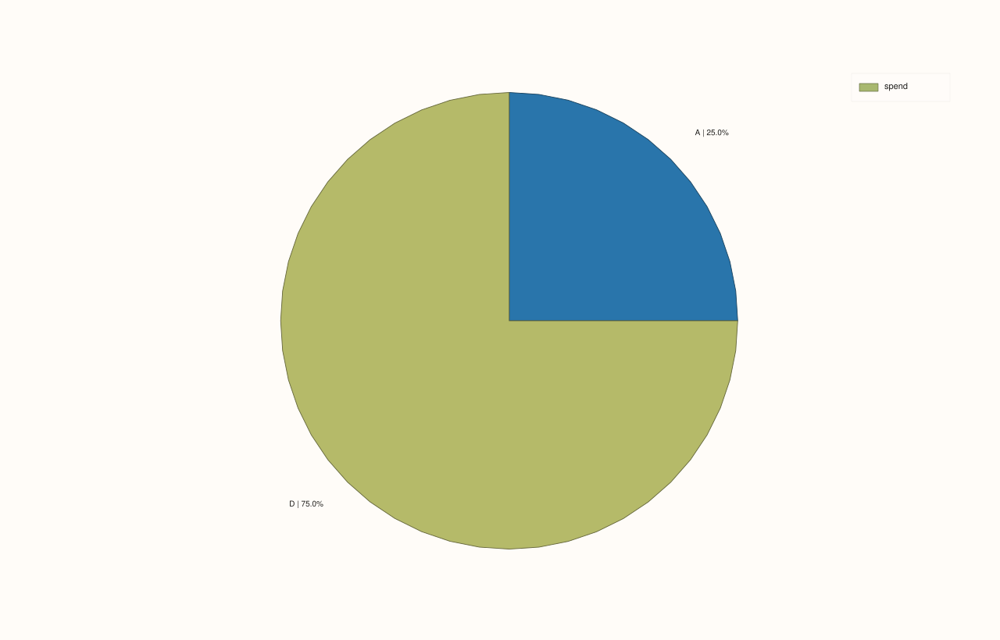
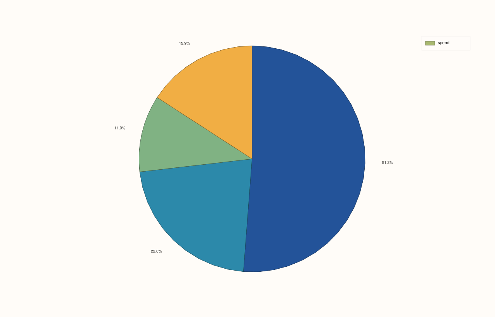

DataFramePlotAccessor::pie¶
Back to DataFramePlotAccessor API Reference
Signatures¶
DataFramePlotAccessor::pie(std::string_view value_feature,
std::optional<std::string_view> label_feature = std::nullopt) const -> pluss::pl::Studio
DataFramePlotAccessor::pie(std::string_view value_feature,
std::optional<std::string_view> label_feature,
const PiePlotOptions& options) const -> pluss::pl::Studio
What It Does¶
Draws a pie chart from one numeric value_feature, with slice labels coming either from an
explicit label_feature or (if omitted) from the frame’s own row labels.
Important
Non-positive and non-finite values are silently dropped, not zero-sized slices
Before drawing, every row is filtered: only rows where value_feature is both finite
and strictly greater than zero are kept. A row with a zero, negative, NaN, or
infinite value doesn’t appear as a zero-width sliver — it’s removed from the chart
entirely, and its label never appears (including in the legend). If every row gets
filtered out, the call throws "DataFrame::plot().pie: feature '<name>' has no positive finite values". This matters for percentage calculations too: the percentage shown for
each slice is computed against the total of the surviving (positive, finite) values
only, not the original column’s total.
Parameters¶
value_feature (std::string_view)
The numeric feature whose values become slice sizes. Only finite, strictly positive
values are plotted — see the important callout above.
label_feature (std::optional<std::string_view>, default std::nullopt)
The feature whose values label each slice. When omitted, the frame’s own row labels are
used instead (the axis/slice label falls back the same conceptual way
line()’s x-axis does when no x_feature is given, though pie() has no
default_x_feature-style shortcut of its own — it’s just “explicit label_feature, or
the row labels”).
options (PiePlotOptions)
cpp struct PiePlotOptions { bool show_label{true}; bool show_percent{true}; bool show_value{false}; int precision{1}; std::string separator{" | "}; };
Each show_* flag independently controls whether that piece of text appears on a
slice; when more than one is enabled, the pieces are joined with separator in the
order label, then percent, then value. precision (clamped to 0..12) controls decimal
places for both the percentage and the raw value text. If all three show_* flags are
false, no per-slice text is rendered at all (slices are still drawn and colored, just
unlabeled).
Returns¶
pluss::pl::Studio
A figure with one pane containing a single pie trace.
Examples¶
Example 1. Default options: explicit label feature, showing label and percentage.
using namespace pluss::table;
auto budget = DataFrame({
{"category", Slate(pluss::make_note({"Engineering", "Sales", "Support", "Marketing"}))},
{"spend", Slate(pluss::make_series({420.0, 180.0, 90.0, 130.0}))},
});
auto chart = budget.plot().pie("spend", "category");
chart.show();
Each slice is labeled with its category name and its percentage of the total spend
(e.g. "Engineering | 51.2%", computed to precision = 1 decimal place by default).
Example 2. No label_feature: falls back to the frame’s own row labels.
auto by_case = DataFrame({
{"spend", Slate(pluss::make_series({420.0, 180.0, 90.0, 130.0}))},
}, Slate(pluss::make_note({"eng", "sales", "support", "marketing"})));
auto chart = by_case.plot().pie("spend");
chart.show();
Since label_feature is omitted, each slice is labeled with by_case’s own row labels
("eng", "sales", "support", "marketing") instead of a separate feature column.
Example 3. Non-positive and non-finite values are dropped — and the remaining slices’ percentages are computed against the smaller, filtered total.
auto mixed = DataFrame({
{"category", Slate(pluss::make_note({"A", "B", "C", "D"}))},
{"spend", Slate(pluss::make_series({100.0, -50.0, 0.0, 300.0}))},
});
auto chart = mixed.plot().pie("spend", "category");
chart.save_pdf("mixed_pie.pdf");
Only "A" (100.0) and "D" (300.0) survive the filter; "B" (negative) and "C" (zero)
are dropped entirely — they never appear as slices or in the legend. The percentages shown
are 25.0% and 75.0% — computed against 100 + 300 = 400, not the original four-row
total.

Example 4. show_value = true alongside the defaults, and a custom separator.
PiePlotOptions options;
options.show_value = true;
options.separator = " — ";
options.precision = 0;
auto chart = budget.plot().pie("spend", "category", options);
chart.show();
Each slice now shows all three pieces joined by " — ": label, percentage, and raw value,
e.g. "Engineering — 51% — 420" (rounded to precision = 0 decimal places).

Example 5. All label text disabled — slices are drawn and colored, but unlabeled.
PiePlotOptions bare_options;
bare_options.show_label = false;
bare_options.show_percent = false;
auto chart = budget.plot().pie("spend", "category", bare_options);

Example 6. Every row filtered out throws.
auto empty_after_filter = DataFrame({
{"spend", Slate(pluss::make_series({0.0, -5.0, -10.0}))},
});
try {
auto bad = empty_after_filter.plot().pie("spend");
} catch (const std::exception& e) {
std::cout << e.what();
}
Output¶
DataFrame::plot().pie: feature 'spend' has no positive finite values
Notes¶
Only finite, strictly positive values are plotted; everything else is silently dropped, and percentages are computed against the filtered total — see the important callout above.
label_featureomitted falls back to the frame’s own row labels.precisionis shared between the percentage and value text, clamped to0..12.An entirely-filtered-out feature throws rather than producing an empty chart.
Returns a
pluss::pl::Studio— seeline()’s important callout for how to view or save the result.
See Also¶
DataFramePlotAccessor::bar: a composition-friendly alternative when exact comparison between category sizes matters more than “share of a whole.”DataFramePlotAccessor::heatmap: another way to summarize categorical breakdowns, for two grouping dimensions at once instead of one.